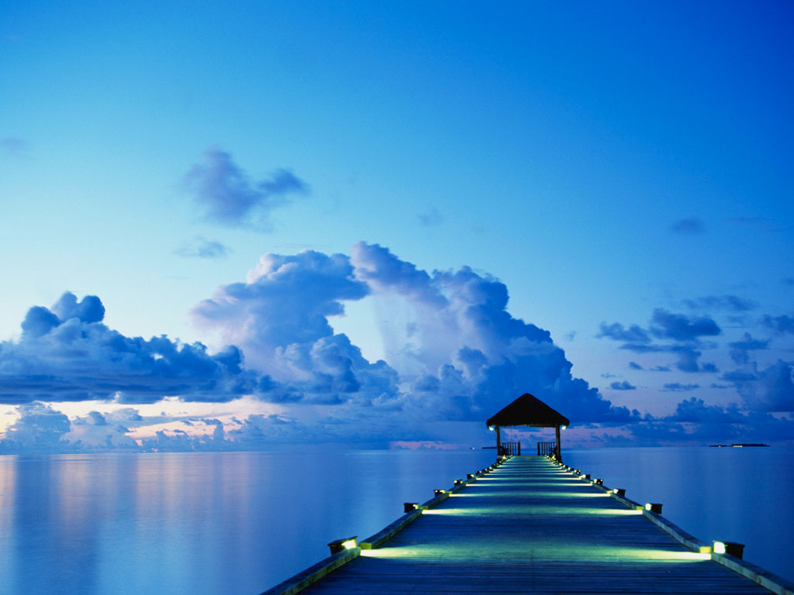
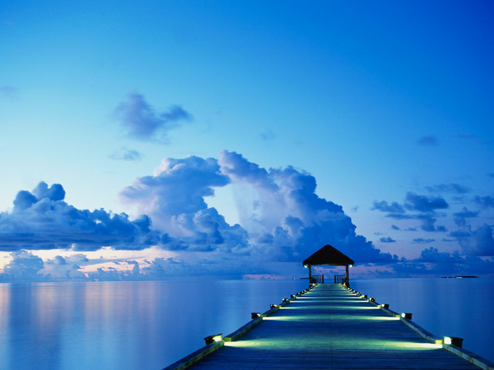

MARINE DRIVE :
Marine Drive is a picturesque promenade in Kochi, Kerala, India. It is built facing the backwaters, and is a popular hangout for the local populace.
Ironic to its name, no vehicles are allowed on the walkway. Marine Drive is also an economically thriving part of the city of Kochi.
With several shopping malls it is as an important centre of shopping activity in Kochi. Major fast food joints, including Marrybrown, DiMark, Barista, Coffee Bar are present along the walkway.
The view of the setting and rising sun over the sea mouth, and the gentle breeze from the Vembanad Lake has made Marine Drive an important tourist destination in Kochi.
Hundreds of people (both natives, and tourists) throng the walkway during the evenings. The walkway starts from the High Court Junction and continues until the Rajendra Maidan.
There are also several boat jetties along the walkway.
 

HOME
NEXT